Без групп
Мастер-классы индивидуальные, чтобы внимания хватило каждому. Можно прийти с другом или подругой.
Лепим чашки, миски и вазы на гончарном круге или руками. Без групп и спешки: только вы, глина и Маша рядом.
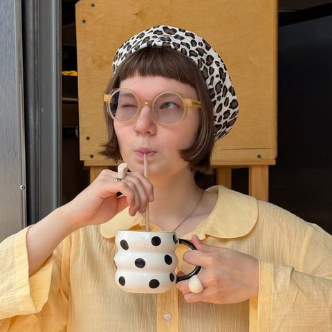
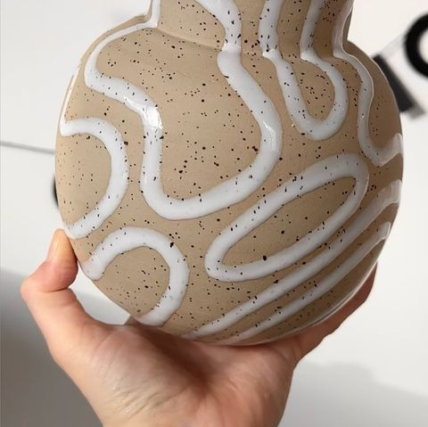
Привет! Я Маша, и я научу 🍶
Можно прийти с подругой
Выберите формат и количество гостей — ниже сразу появятся сумма и готовый текст заявки.
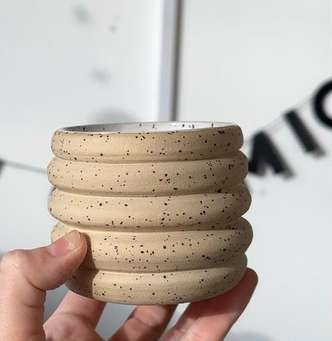
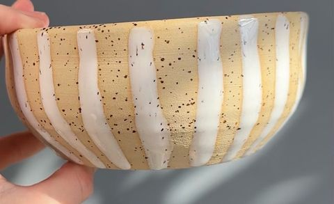
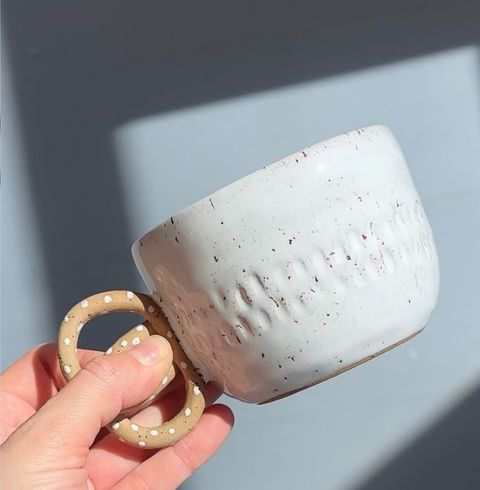
Здесь получаются ровные и симметричные формы. Глина крутится, а вы учитесь её центровать и вытягивать стенки — Маша страхует каждое движение.
Что можно сделать
Текст заявки скопируется, останется вставить его в сообщение Маше.
Вы лепите, а дальше Маша ведёт изделие через сушку и два обжига. Через 3–4 недели забираете готовую посуду.
Два часа за кругом или за столом. Успеете до трёх изделий — зависит от размера и темпа.
Изделие медленно сохнет на полке мастерской, затем впервые отправляется в печь.
Маша покроет работу глазурью в один цвет. Хотите сами — приходите на роспись через 2–3 недели.
Глазурь плавится и становится стеклом. Глина спекается до плотного черепка.
Наливаете чай в чашку, которую сделали своими руками.
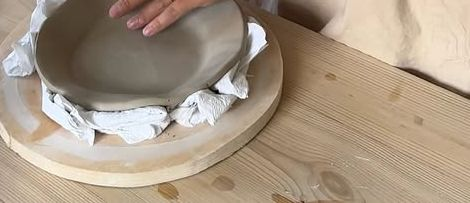
Маша работает с глиной, которую обжигают при 1230 градусах. Она прочная и почти не впитывает влагу, поэтому посуду можно ставить в микроволновку и посудомоечную машину и пользоваться каждый день.
Мастер-классы индивидуальные, чтобы внимания хватило каждому. Можно прийти с другом или подругой.
За гончарным кругом — до 2 человек. На ручной лепке — до 8: подойдёт для девичника или маленького дня рождения.
За два часа делаете до трёх изделий сами. Маша помогает, но не лепит за вас.
На росписи Маша объясняет, какие глазури бывают и как с ними работать, чтобы получились необычные сочетания.
Всё, чтобы сделать дом ещё уютнее. Отложите понравившееся — соберём заказ одним сообщением. Отправка Яндексом, доставка считается индивидуально.
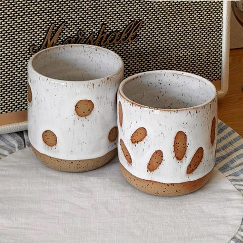
350 мл
1800 ₽ шт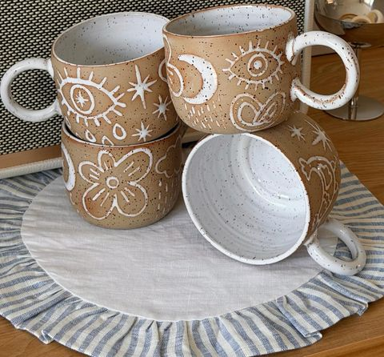
400 мл
3500 ₽ шт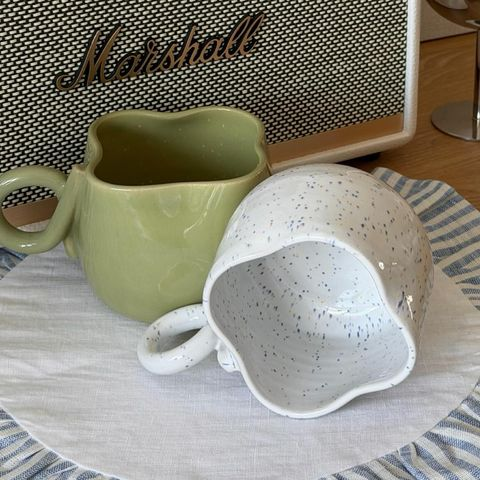
350–400 мл
2200 ₽ шт350 мл
2700 ₽ шт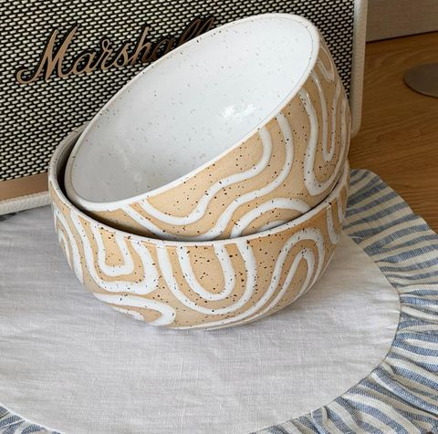
Для салата, супа, каши — для любой еды
2400 ₽ шт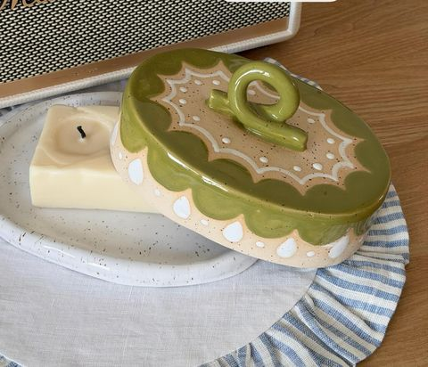
Эффектная, с крышкой-завитком
5500 ₽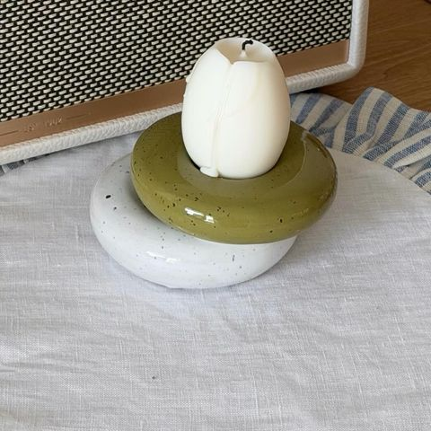
Для яйца к завтраку или свечи
1400 ₽ шт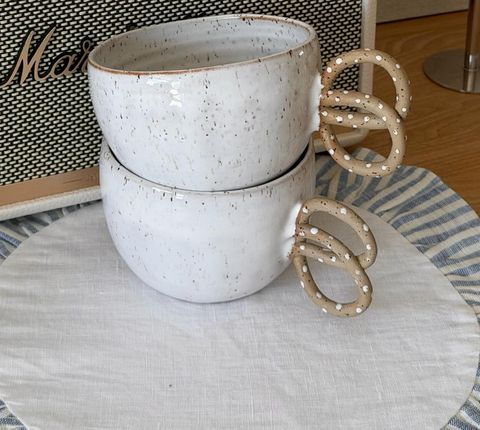
400 мл
2500 ₽ шт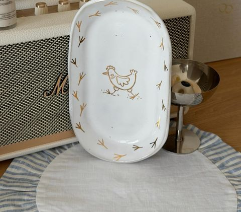
Сервировочная
3000 ₽Первый раз за кругом, первый раз с глазурью — и вот что получается.
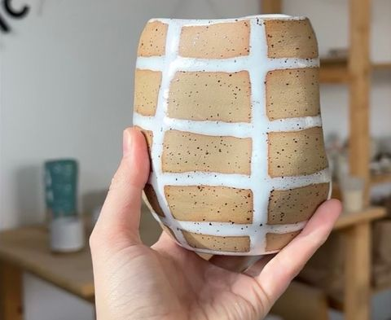
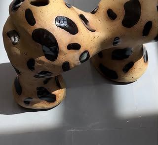
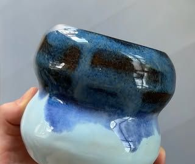
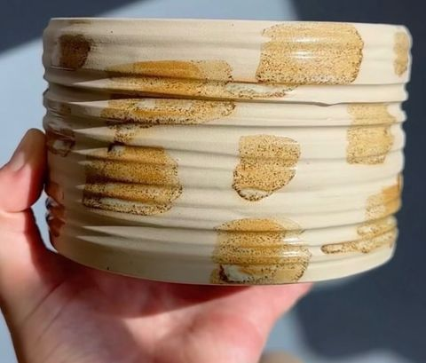
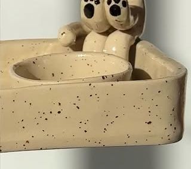
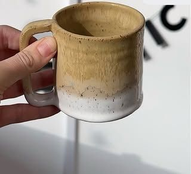
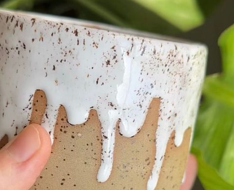
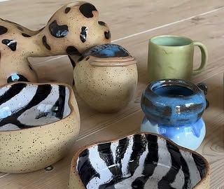
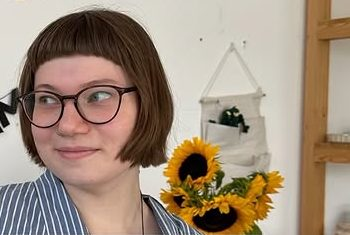
Создаю посуду и тебя научу 🍶
Lagom по-шведски — «в самый раз»: не больше и не меньше, чем нужно.
Так и в мастерской: два часа тишины, глина под руками и чашка, которой потом пользуешься каждое утро. Маша сама лепит всю посуду из наличия и ведёт каждый мастер-класс.
В телеграм-канале она обозревает вау-локации, показывает новые изделия и вдохновляет на творчество и slow life.
Нет. Занятия индивидуальные, Маша показывает каждое движение и помогает по ходу. Большинство гостей садятся за гончарный круг впервые.
Через 3–4 недели после мастер-класса: изделия сохнут, проходят обжиг, покрываются глазурью и обжигаются второй раз при 1230 градусах.
Да. Высокотемпературная глина прочная и почти не впитывает воду, поэтому подходит и для посудомоечной машины, и для микроволновки.
За гончарным кругом — до 2 гостей, на ручной лепке — до 8. Группы Маша не набирает: на занятии только ваша компания.
Не страшно: Маша сама покроет ваши работы глазурью в один цвет. Роспись — отдельный мастер-класс для тех, кто хочет необычные цветовые сочетания.
Яндекс Доставкой по Москве и в другие города. Стоимость считается индивидуально — напишите, куда отправить.
Москва, Скаковая ул., 9
арт-кластер ГАММА
Белорусская